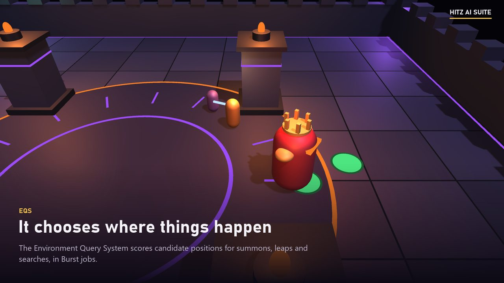
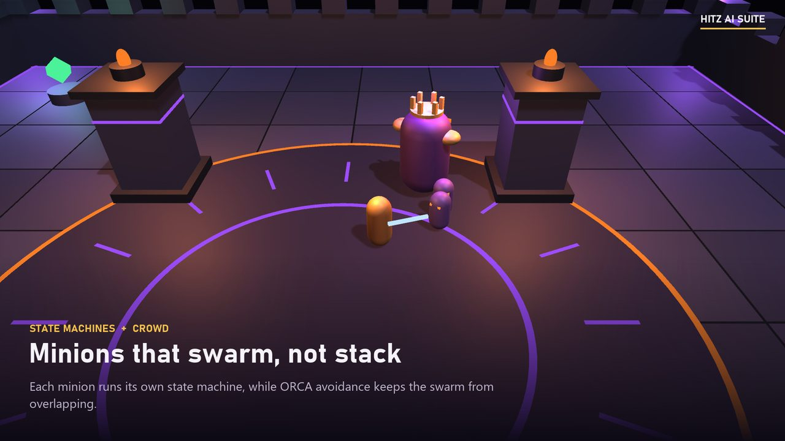
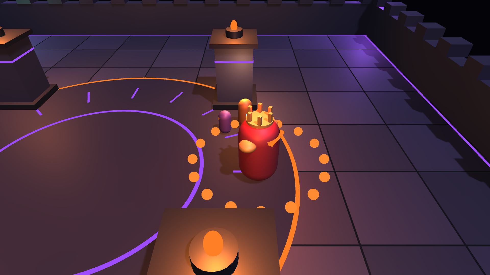
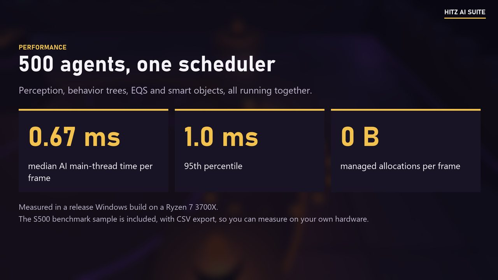

Home / Projects / Hitz AI Suite
Independent project, published on Fab
Hitz AI Suite
An AI toolkit for Unity 6: behavior trees, state machines, perception, EQS, navigation, crowd avoidance and smart objects on one scheduler, with a visual debugger.

Overview
Hitz AI Suite gives a Unity studio the systems it needs to build enemies, companions and crowds, designed to work together and to stay fast with hundreds of agents. If you know Unreal Engine's AI framework, the concepts will be familiar.
My role
I designed and built everything: the runtime systems, the editor tooling, the samples and the documentation.
Main responsibilities
- AI World: one scheduler for every system, with level of detail and a per-frame time budget.
- Behavior Trees and State Machines for decisions; Blackboards for agent memory.
- Perception, Navigation, EQS, Crowd avoidance (ORCA) and Smart Objects.
- A visual debugger and a GraphView behavior tree editor.
- A bridge to Unity's own Behavior package.
Technical challenges
Run many agents inside a fixed frame budget, let conditions interrupt lower-priority behaviour at once, make agent decisions visible while debugging, and keep unused systems out of the build.
Implementation
The Boss Fight sample shows every system in one encounter. The Warden sees you in a wide cone, but pillars block its view, and it hears your sword. Its behavior tree picks every move by priority: roar at phase changes, recover from staggers, heal when low, otherwise fight. EQS picks where it leaps, where it summons minions and where it searches when it loses you. Minions run a state machine and swarm with crowd avoidance. In the last phase it claims a healing shrine, and hitting it interrupts the heal.

Results
500 agents with perception, behavior trees, EQS and smart objects run at 0.67 ms median and 1.0 ms p95 of AI main-thread time per frame, with no managed allocations per frame. Measured with the included benchmark in a release Windows player on a Ryzen 7 3700X.
Links and media



